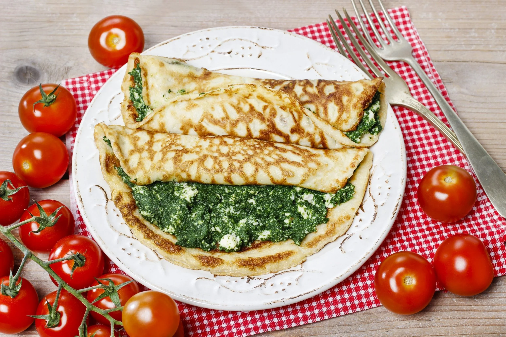
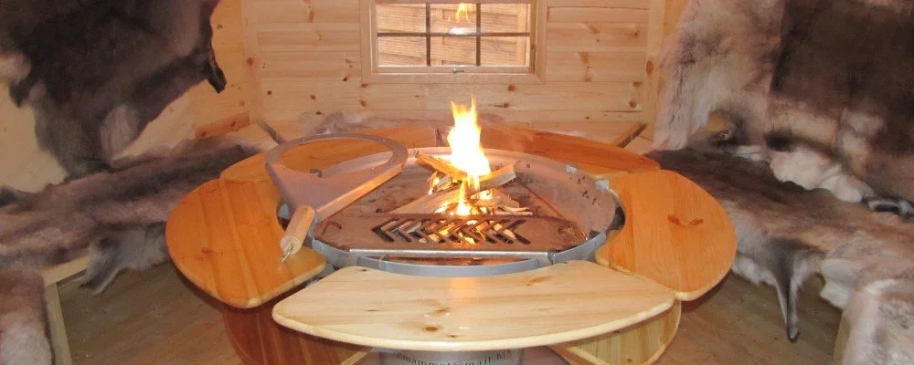
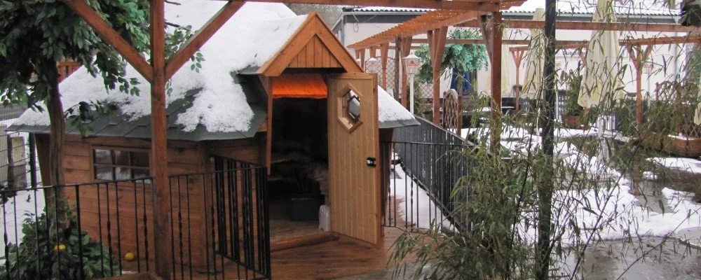
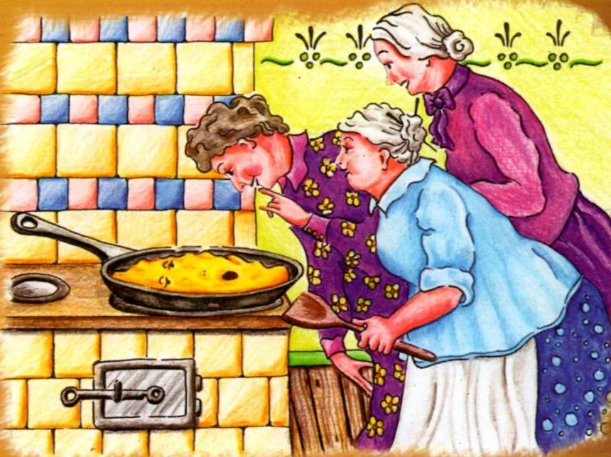
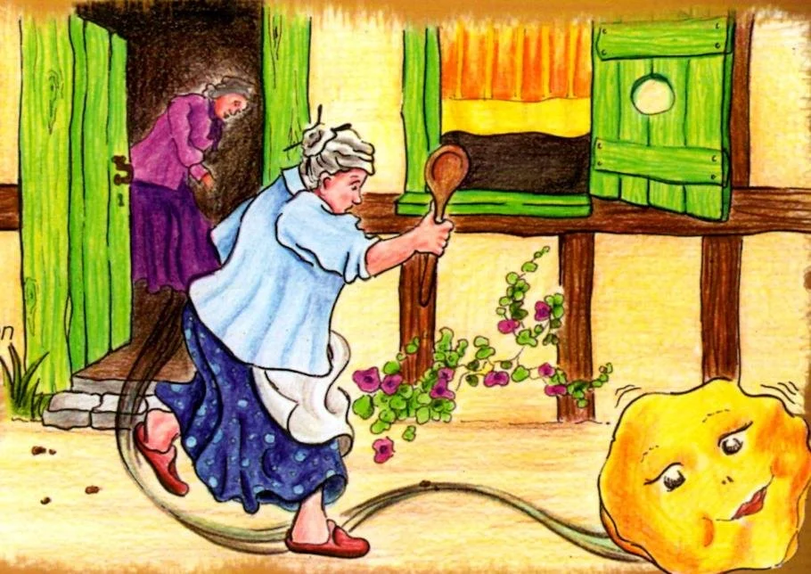
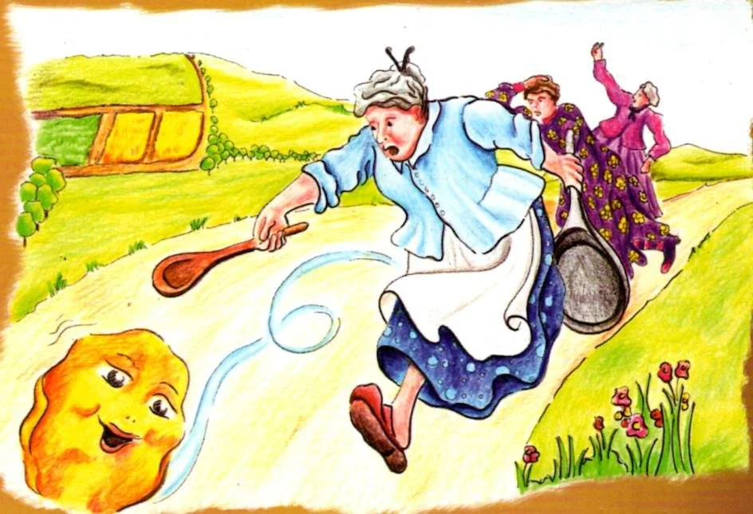
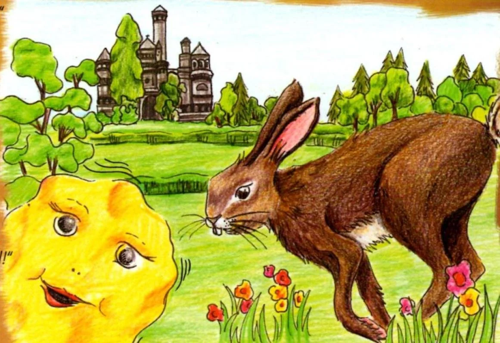
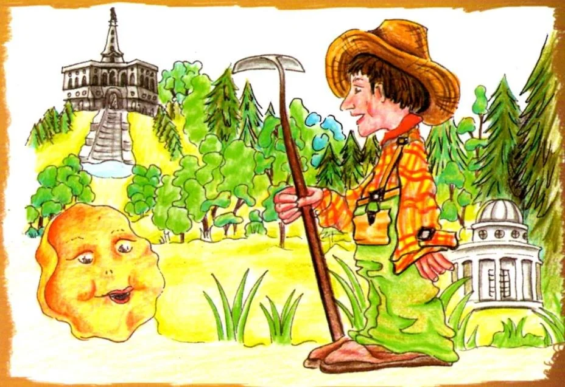

Kontakt
Auedamm 17
34121 Kassel
Deutschland

Kassel
Herzhafte und süße Pfannkuchen, warme Farben, eine gemütliche Grillhütte und ein Ort, der sich anfühlt wie ein kleiner Zwischenstopp am Rand der Karlsaue.
Auedamm 17
34121 Kassel
Deutschland
Dienstag und Mittwoch Ruhetag
Jeden Tag 12 - 22 Uhr
Küche bis 21 Uhr
Direkt am Auedamm in Kassel, zwischen Stadt, Park und einer Küche voller Lieblingsgerichte.
Die Pancake-Geschichte
Hier ist die ganze Geschichte so erzählt, wie sie zum Haus gehört: als Reise durch Kassel, von der Küche der drei alten Damen bis zum Auedamm, wo der Pfannkuchen schließlich die Kinder direkt ins House of Pancake führt.
Die Bilder im Abschnitt folgen deiner Reihenfolge und machen die Geschichte wie ein kleines bebildertes Märchen auf der Website erlebbar.

1
Es waren einmal drei alte Damen, die großen Appetit auf einen leckeren Pfannkuchen hatten. Sie nahmen Mehl, Milch und Eier, rührten alles zu einem cremigen Teig zusammen und gossen ihn in eine große heiße Pfanne, bis der Pfannkuchen immer dicker und schöner wurde.

2
Die drei alten Damen wurden immer ungeduldiger. Als der Pfannkuchen hörte, dass man ihn bald umdrehen wolle, erschrak er, sprang schließlich aus der Pfanne und rollte zur Tür hinaus auf die Straße wie ein Rad.

3
"Oh je! Stopp! Willst du wohl stehen bleiben!" riefen die drei alten Damen und liefen mit Pfanne und Kochlöffel hinterher. Doch der Pfannkuchen rollte schnell wie der Wind aus dem Städtchen hinaus.

4
Durch Wiesen und Wälder, vorbei an der Löwenburg, sprang ihm ein Hase entgegen. Der wollte ihn gern fressen, doch der Pfannkuchen rief nur, dass nach den drei alten Damen auch der Hase kein Glück haben solle, und rollte weiter.

5
Später kam der Pfannkuchen zum Herkules und hüpfte die vielen Treppen hinunter. Unten traf er den Gärtner des Schlossparks, der ihn ebenfalls kosten wollte. Doch auch ihm entwischte der Pfannkuchen und rollte hastig weiter.

6
Er rollte und rollte, bis er den Auedamm erreichte. An der Spitzhacke begegnete er einem schönen weißen Schwan. Doch auch der Schwan konnte ihn nicht aufhalten, und so rollte der Pfannkuchen weiter in den anliegenden Auepark.

7
In der Nähe der Schwaneninsel kam ihm eine Entenfamilie entgegen. Auch sie bat um ein Stückchen vom leckeren Pfannkuchen, aber nachdem er schon den Damen, dem Hasen, dem Gärtner und dem Schwan entwischt war, rollte er auch an ihnen am Wasser entlang vorbei.

8
Als die Sonne unterging, traf der Pfannkuchen am Ende einer kleinen weißen Brücke drei Waisenkinder, die sich verirrt hatten und weinend vor Hunger dort saßen. Anders als zuvor hörte er hier keine Gier, sondern echte Not.

9
"Folgt mir! Es ist nur noch ein kleines Stück aus dem Park hinaus, über die Straße direkt am Auedamm. Dort befindet sich das Pfannkuchenhaus Kassels. Da gibt es ganz viele Pfannkuchen, so dick und lecker wie mich, mit allem drauf und drin, was euer Herz begehrt."
Und so folgten die Kinder dem Pfannkuchen ins Pfannkuchenhaus und schlugen sich dort die Bäuche voll. Genau dort endet die Geschichte und beginnt der Besuch im House of Pancake.
Grillhütte
Erleben Sie unvergessliche Grillabende in unserer Grillhütte. Die rustikale und zugleich gemütliche Atmosphäre bietet Platz für 8 bis 14 Personen, die hier in privater Runde zusammen grillen können.
Für 35 Euro pro Person stellen wir eine großzügige Grillplatte zur Verfügung. Ideal für Geburtstage, besondere Anlässe oder einfach einen entspannten Abend, der so warm und gesellig wirkt wie die Bilder aus dem Haus selbst.
Grillhütte anfragen

Galerie
Ein Blick auf Teller, Atmosphäre und die warmen Momente, die die Geschichte des Hauses begleiten.





Kontakt
Für Reservierungen, Fragen zur Grillhütte oder einen Besuch im Pfannkuchenhaus erreichst du uns direkt telefonisch.
Telefon
+49 561 23171Adresse
Auedamm 17
34121 Kassel
Hinweis
Dienstag und Mittwoch Ruhetag. Küche bis 21 Uhr.